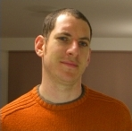

Welcome.
I am a post-doc ("Research Associate") with the Computer Architecture Group at the Computer Laboratory, University of Cambridge; I've earned my PhD on "Security for volatile FPGAs" in September 2009. I'm also a member of Darwin College. I am mainly interested in the security attributes of programmable logic devices, though I've been involved with several interesting projects on banking systems security.
I was born and raised in Israel, most of the years living in Jerusalem. Every now and then I write personal observations about the world on my (now-not-so-active) weblog, "Side Channels". See also my LinkedIn profile, and attempts at being witty on Twitter.
Years ago I started the FPGA design security bibliography, which isn't maintained anymore.
Contact Info
saardrimer@gmail.com (email is by far the best way to reach me)
Saar Drimer
University of Cambridge
Computer Laboratory
15 JJ Thomson Avenue
Cambridge CB3 0FD
United Kingdom
Steven J. Murdoch, Saar Drimer, Ross Anderson and Mike Bond:
Chip and PIN is broken
31st IEEE Symposium on Security & Privacy, 5/2010. Awarded "Best Practical Paper".
[blog article][press release][FAQ][BBC Newsnight video/YouTube]
Saar Drimer, Tim Güneysu and Christof Paar:
DSPs, BRAMs and a pinch of logic: extended recipes for AES on FPGAs,
ACM Transactions on Reconfigurable Technology and Systems, Issue 3, Volume 1, 1/2010
[source code]
Saar Drimer, Steven J. Murdoch and Ross Anderson:
Failures of tamper-proofing in PIN entry devices,
IEEE Security & Privacy magazine (invited), 11-12/2009
Saar Drimer:
Security for volatile FPGAs
PhD dissertation, 9/2009
[source code] [bibtex]
Saar Drimer and Markus Kuhn:
A protocol for secure remote updates of FPGA configurations,
5th International Workshop on Applied Reconfigurable Computing, 3/2009.
[slides]
Saar Drimer, Steven J. Murdoch and Ross Anderson:
Optimised to fail: card readers for online banking,
13th International Conference on Financial Cryptography and Data Security, 2/2009.
[related BBC video]
Gerhard P. Hancke and Saar Drimer:
Secure proximity identification for RFID
Book chapter in "Security in RFID and Sensor Networks", Zhang and Kitsos (Eds), Auerbach Publications, Taylor & Francis Group 4/2009.
Saar Drimer, Tim Güneysu, Markus G. Kuhn and Christof Paar:
Protecting multiple cores in a single FPGA design,
Draft, written 5/2008, available on-line 8/2008.
Saar Drimer, Steven J. Murdoch and Ross Anderson:
Thinking inside the box: system-level failures of tamper proofing,
IEEE Symposium on Security and Privacy, 5/2008. Awarded "Best Practical Paper".
[bibtex] [extended version] [poster] [FAQ] [related BBC video]
Saar Drimer, Tim Güneysu and Christof Paar:
DSPs, BRAMs and a pinch of logic: new recipes for AES on FPGAs,
IEEE Symposium on Field-Programmable Custom Computing Machines (FCCM), 4/2008.
[bibtex] [source code]
Saar Drimer:
Volatile FPGA design security -- a survey,
unpublished, 4/2008 (version 0.96).
[bibtex]
Saar Drimer and Steven J. Murdoch:
Keep your enemies close: distance bounding against smartcard relay attacks,
16th USENIX Security Symposium, 8/2007. Awarded "Best Student Paper".
[bibtex] [slides] [poster] [related BBC video]
Saar Drimer:
Authentication of FPGA bitstreams: why and how,
3rd International Workshop on Applied Reconfigurable Computing, 3/2007.
[bibtex]
Austin Lesea, Saar Drimer, Joe Fabula, Carl Carmichael and Peter Alfke:
The Rosetta experiment: atmospheric soft error rate testing in differing technology FPGAs,
IEEE Transactions on Device and Materials Reliability (invited paper), 9/2005.
[bibtex]
Chip & PIN -- notes on a dysfunctional security system,
The Institution of Engineering and Technology (IET), Cambridge, UK, 2010-03-05 (60 minutes)
Three years of EMV: attacks and lessons,
SEC-T 2009, Stockholm, Sweden, 2009-09-10, (60 minutes)
Reproducing and benchmarking FPGA designs,
Workshop on Cryptographic Hardware and Embedded Systems (CHES), panelist, EPFL, Lausanne, Switzerland, 2009-09-08 (15 minutes)
On the security of EMV payment systems,
Université de Bretagne-Sud Lorient, France, 2009-07-01, (60 minutes)
A protocol for secure remote updates of FPGA configurations,
5th International Workshop on Applied Reconfigurable Computing,
Karlsruhe Institute of Technology, Germany 2009-03-16 (20 minutes)
Volatile FPGA security -- current problems and possible solutions,
Computer Science Department, University of Bristol, UK, 2008-10-30, (60 minutes)
Security vulnerabilities of Chip and PIN,
Computer Laboratory "Show and Tell Event", Cambridge, UK, 2008-09-30, (15 minutes)
Securing SRAM FPGA designs in distribution and in operation,
CryptArchi, Trégastel, France, 2008-06-02 (50 minutes)
Keep your enemies close: distance bounding against smartcard relay attacks,
16th USENIX Security Symposium, Boston, US, 2007-08-08 (20 minutes)
Saar Drimer:
Random sequence generation using alpha particle emission,
US Patent #7550858, issued 6/2009 (filed 7/2005). [USPTO]
Saar Drimer:
True random number generator and method of generating true random numbers,
US Patent #7502815, issued 3/2009 (filed 2/2004). [USPTO]
Saar Drimer:
Radio frequency identification (RFID) and programmable logic device (PLD) integration and applications,
US Patent #7429926, issued 9/2008 (filed 6/2005). [USPTO]
Saar Drimer, Jason Moore and Austin Lesea:
Circuit for and method of implementing a plurality of circuits on a programmable logic device,
US Patent #7408381, issued 8/2008 (filed 2/2006). [USPTO]
Saar Drimer:
Total configuration memory cell validation built in self test (BIST) circuit,
US Patent #7409610, issued 8/2008 (filed 7/2005). [USPTO]
Austin Lesea, Saar Drimer:
Method of measuring the performance of a transceiver in a programmable logic device,
US Patent #7218670, issued 5/2007 (filed 11/2003). [USPTO]
I am/was on the program committee of:
ReConFig 2008, 2009.
I Reviewed manuscripts for:
ACM Transactions on Reconfigurable Technology and
Systems, IEEE Transactions on Circuits and Systems I, IEEE Design &
Test of Computers, IEEE Transactions on Information Forensics and
Security, Workshop on Cryptographic Hardware and Embedded Systems (CHES 2008, 2009), IEEE International Conference on Pervasive Computing and Communications (2007).
BBC has filmed a segment of us demonstrating a practical attack using CAP readers.
The Times asked me to write a commentary on the vulnerabilities of Chip and PIN, after a court ruling in the Patel case.
I gave some comments on a PED tampering case to The Register, 8/2008.
BBC Two's "Newsnight" segment on vulnerabilities in Chip and PIN "PIN entry devices" (PEDs), 2/2008.
BBC One's "Watchdog" segment on Chip and PIN relay attacks, 2/2007
Chip and PIN payment terminal playing Tetris (yes, that's my hand!), 12/2006
I sometimes write articles for our group's weblog, Light Blue Touch Paper [my posts].